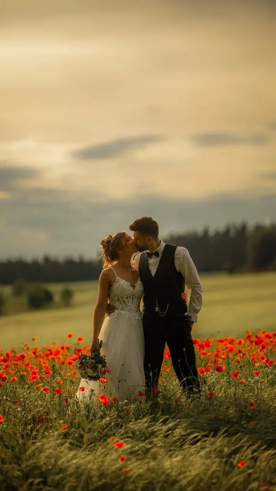
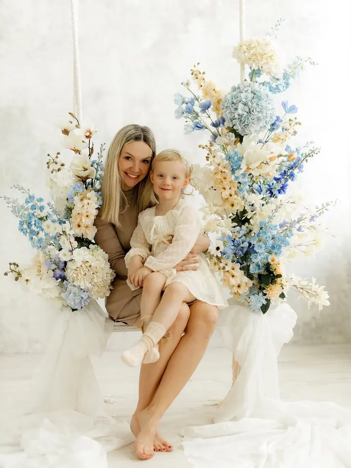
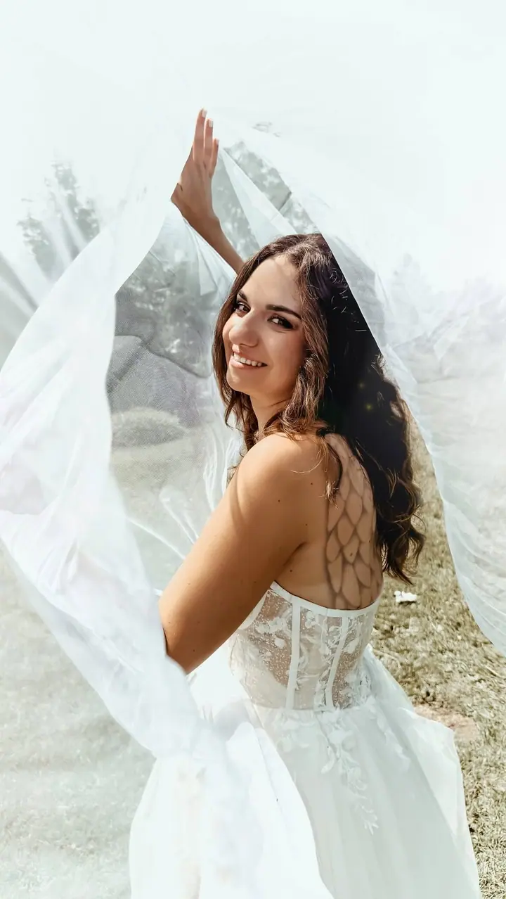
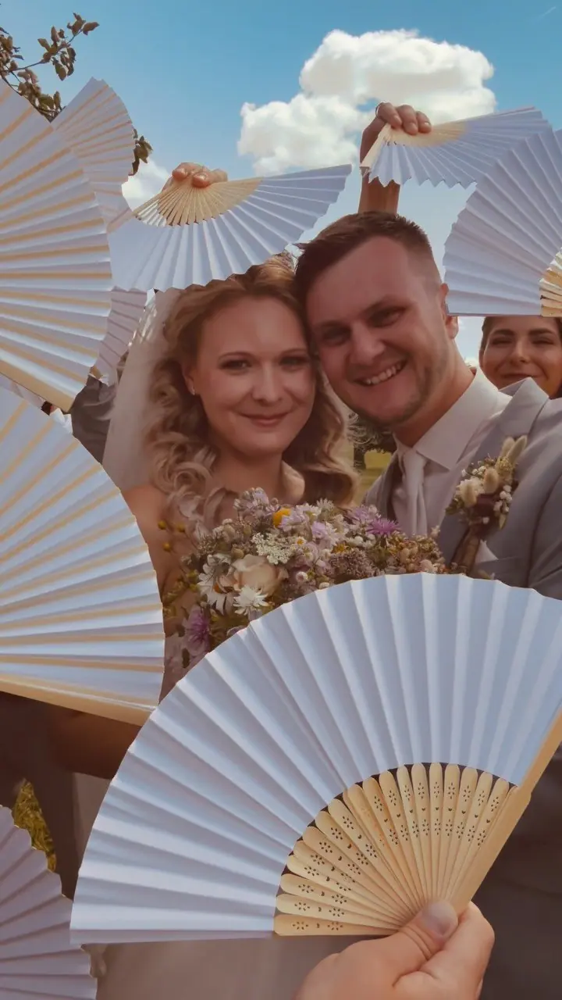
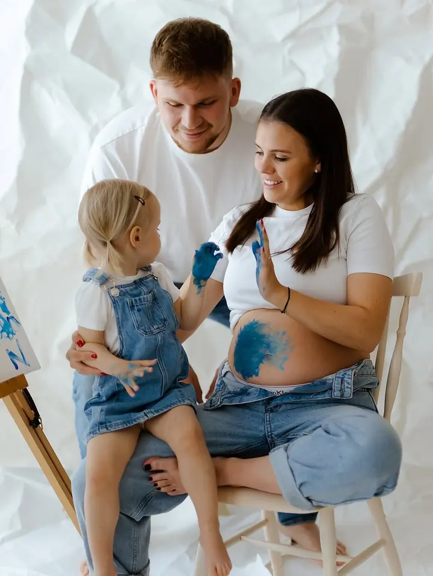
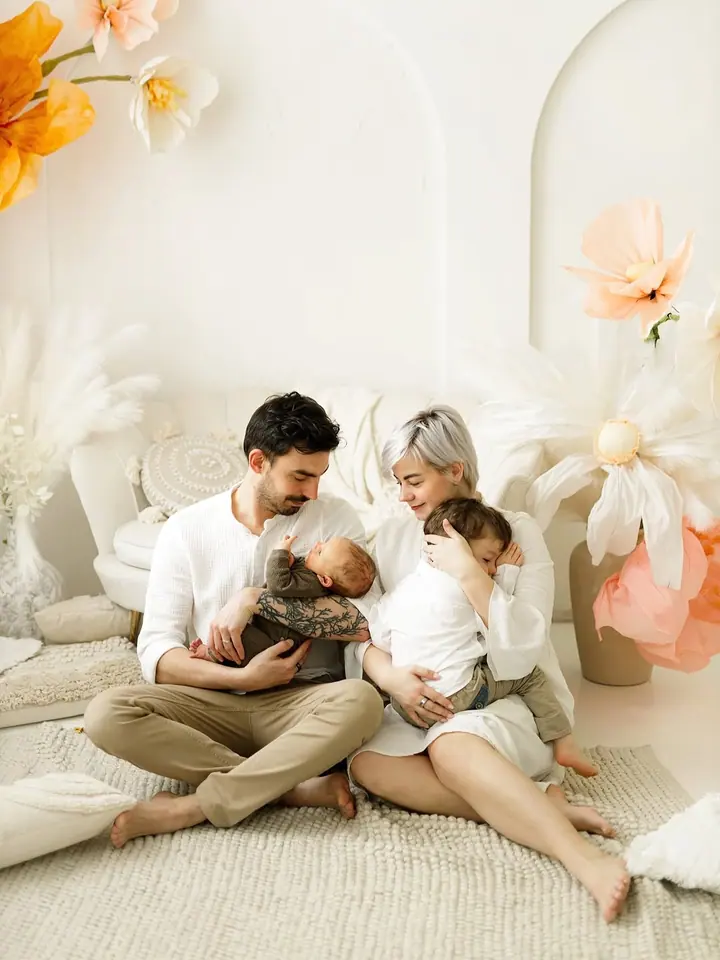

Rodinné focení
Fotím rodiny v ateliéru, v přírodě nebo u vás doma. Přirozené portréty i aranžované pózy a scény, ze kterých si vyberete 10 upravených fotografií.





Jmenuji se Radka Janků a jako Foto Fišerová fotím v Jablonci nad Nisou svatby, rodiny i maminky v očekávání. Fotím v ateliéru, v přírodě nebo u vás doma, přirozené portréty i aranžované scény.
Více o mně
„Chcete si uchovat šťastné chvíle a těšit se z nich při každém prohlížení vašeho rodinného alba?“
— Radka Janků
Fotím rodiny v ateliéru, v přírodě nebo u vás doma. Přirozené portréty i aranžované pózy a scény, ze kterých si vyberete 10 upravených fotografií.
Fotím jen samotný obřad, nebo celý den od příprav nevěsty až po oslavu. Vyberete si z pěti balíčků podle toho, kolik ze svého dne chcete mít na fotkách.
Těhotenské focení v ateliéru nebo venku, klidně s partnerem i se staršími dětmi.
Novorozenecké focení v lifestyle stylu v ateliéru nebo u vás doma, přirozeně a s celou rodinou.
Jmenuji se Radka a jsem profesionální fotografka zaměřená na přirozené portréty i aranžované pózy a scény. Fotím svatby, rodiny, těhotenské focení, newborn lifestyle i boudoir.
Můj ateliér najdete v Jablonci nad Nisou na Jungmannově ulici. Fotím tam na jednobarevném pozadí s různým svícením nebo v připraveném studiu za denního světla, které má každý rok jiný design. To doporučuji nejvíc, je velmi přirozené a v boho stylu.
Každý rok připravuji i vánoční focení s novou scénou. Těším se na setkání se stálými zákazníky i s vámi, kteří se nad výběrem svého fotografa teprve rozmýšlíte.
Napište mi přes formulář nebo zavolejte a domluvíme termín i typ focení, ať jde o rodinu, těhotenství, newborn nebo svatbu.
Fotit můžeme v ateliéru v Jablonci, venku v přírodě nebo u vás doma. Poradím vám i s oblečením.
Rodinné focení trvá obvykle 60 až 90 minut. U svatby fotím podle zvoleného balíčku, od samotného obřadu až po celý den.
Z focení si vyberete fotografie, které vám upravím a pošlu v elektronické podobě.
V ateliéru na adrese Jungmannova 8 v Jablonci nad Nisou, venku v přírodě nebo u vás doma. Mimo Jablonec jezdím do 100 km za 15 Kč/km.
Balíček obsahuje 10 upravených fotografií v elektronické podobě podle vašeho výběru. Každá fotka navíc z ateliéru stojí 150 Kč.
Od focení obřadu do 2 hodin za 9 000 Kč se zhruba 100 fotkami až po celý den od příprav nevěsty po oslavu za 18 000 Kč s více než 400 fotkami. Mimo Jablonec účtuji dopravu 7 Kč/km.
Fotím na jednobarevném pozadí s různým svícením nebo v připraveném studiu za denního světla v boho stylu, které má každý rok jiný design.
fotofiserova@gmail.com
Jablonec nad Nisou